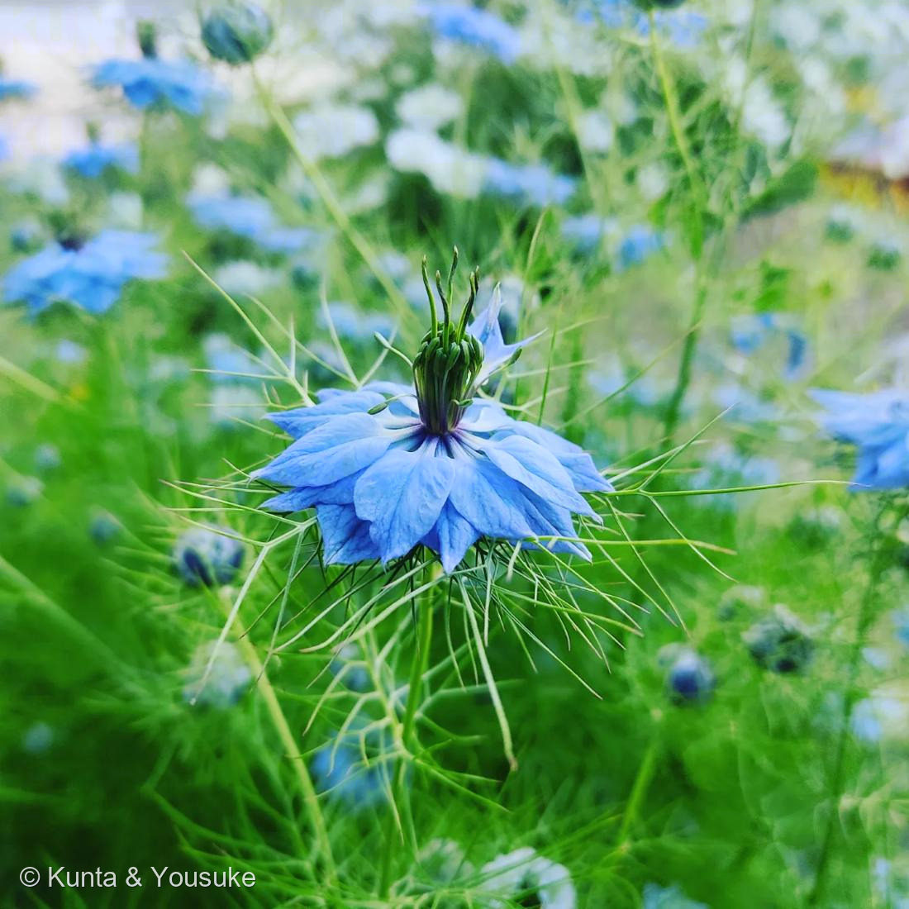

地図を読み込んでいるよ…
🔍 写真も地図も、押しているあいだ拡大して見られるよ（スマホは指を置いてすこし待ってね）。
🌍 の地図＝この子がもともと自生している場所を緑に。地中海沿岸〜西アジア。
学名の damascena ＝ダマスカス（シリア）の。地図の東のはしっこが、名前の場所だよ。
⚠ 地図は国（日本と中国だけ県・省）までしか塗れないから、ほんとうの分布より広く見えていることがあるよ。地図はだいたいの場所。正確なところは、上の文を見てね。
ニゲラ
Nigella damascena L.
和名 · クロタネソウ（黒種草）／ラブ・イン・ア・ミスト
キンポウゲ科 · Ranunculaceae（クロタネソウ属）
学名の由来
- Nigella（ニゲラ）＝ラテン語 niger（黒）の指小形で「黒っぽいもの」。黒い種子にちなむ（和名クロタネソウ＝黒種草も同じ）。
- damascena（ダマスケナ）＝「ダマスカス（シリア）の」。地中海沿岸〜西アジア原産にちなむ。
この植物のこと
- キンポウゲ科クロタネソウ属の一年草。地中海沿岸〜西アジア原産。こぼれ種でよくふえる、コテージガーデンの定番。この個体は八重ぎみ。
- 英名 Love-in-a-mist（霧の中の恋）＝花のまわりを、糸のように細かく裂けた苞・葉が“霧”のように取り巻くことから。
- 青い“花びら”に見えるのは、実は萼（がく）。キンポウゲ科は花弁でなく萼が花びら状に色づくものが多い（No.003スイレンボクの「萼も色づく」と同じテーマ）。本当の花弁は中心の小さな蜜腺状に退化している。
- 中心の緑の“角”は、ふくらんだ子房から伸びた花柱（数本）。花のあと、風船のようにふくらんだ実（さく果）になり、中に黒い種。ドライフラワーにも人気。
- 香辛料の「ブラッククミン／ニゲラ（カロンジ）」は近縁の別種 Nigella sativa の種。観賞用のこのダマスケナとは別物。
- 昨日の宿題013（キンポウゲ科？のなぞの野草）と同じ科の仲間。キンポウゲ科は、この図鑑で何度も出会う科。
花言葉
- 日本で
- 当惑／ひそかな喜び。
- 英語圏
- Love in a Mist — Perplexity.（当惑）Greenaway 1884。英名がそのまま項目名になっている
なぜ、そうなったか：「当惑」は、英名 Love-in-a-mist（霧のなかの恋）から。糸のように細かく裂けた苞が霧みたいに取り巻いていて、花がどこにあるのか、ぱっと見では分からない。だから「当惑」。
でも、この子のすごいところは、近づいてよく見ても、まだ分からないことだ。青い「花びら」は、花びらじゃなくて萼だから（→ 図鑑の小道「見た目と正体がちがう」）。
つまりこの花言葉は、この図鑑がいちばん好きなテーマと、まったく同じことを言っている。1884年の人も、この花の前で「あれ？」ってなったんだと思う。ぼくたちと同じだね。
参考：Kate Greenaway Language of Flowers(1884)・Project Gutenberg／花言葉-由来